数字逻辑与数字系统相关记背知识点
Verilog
标识符
- 命名规则与C语言相同；
- 关键字必须小写；
- 存盘文件名应与设计的模块名相同；
概述
- 四值逻辑：0、1、X(不定)、Z(高阻)；
- 模块由两部分构成：描述接口、描述功能；
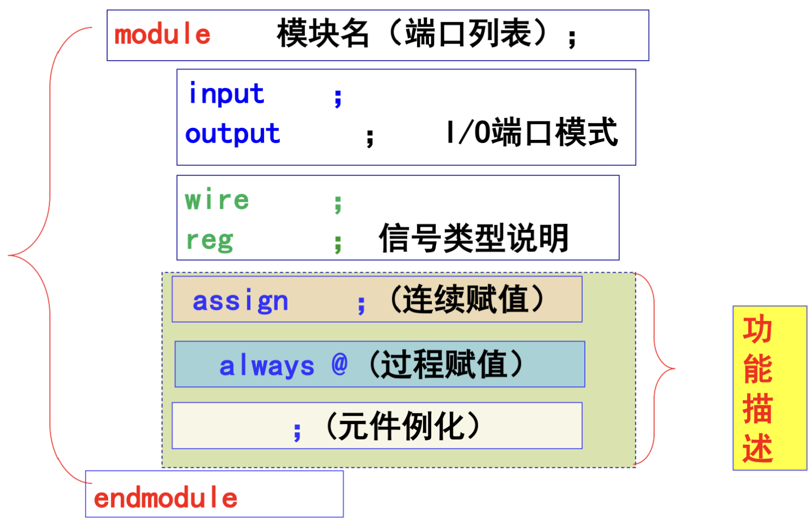
数据类型
- 数据I/O类型；
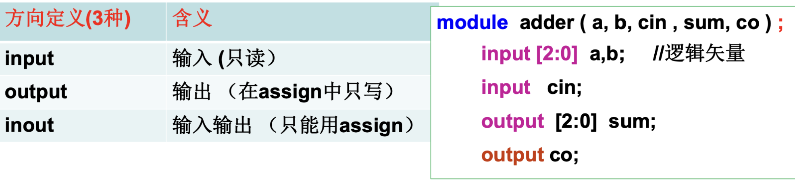
- always中被赋值的信号必须用reg类型的变量；
- 输入和双向端口不能声明为reg型；
- parameter：符号常量，其定义只在本模块内有效；
运算符
- 位连接运算符{ } ，将两个或多个信号的某些位拼接起来。不允许连接非定长常数；
- 自动调整位宽。运算表达式结果的长度由最长的操作数决定；
- 操作结果的长度: 由赋值左端目标长度决定；
功能描述语句
- assign , always , 元件例化，是并发语句；
assign
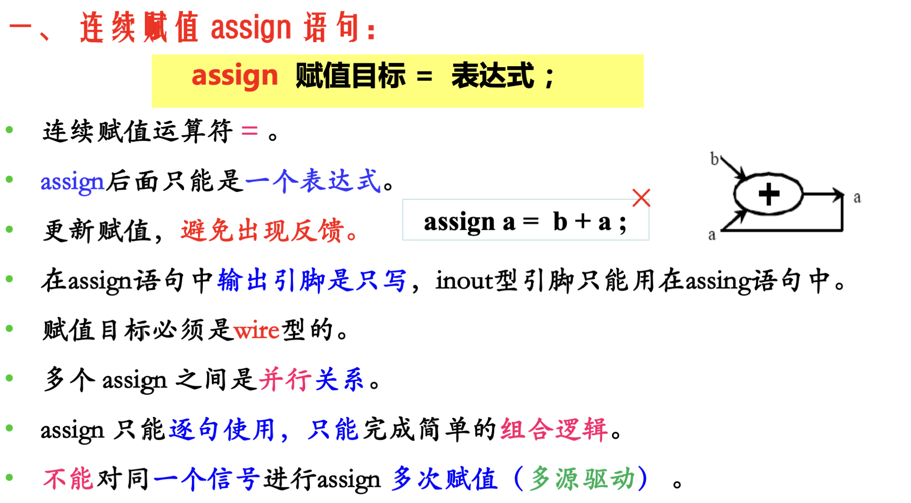
always
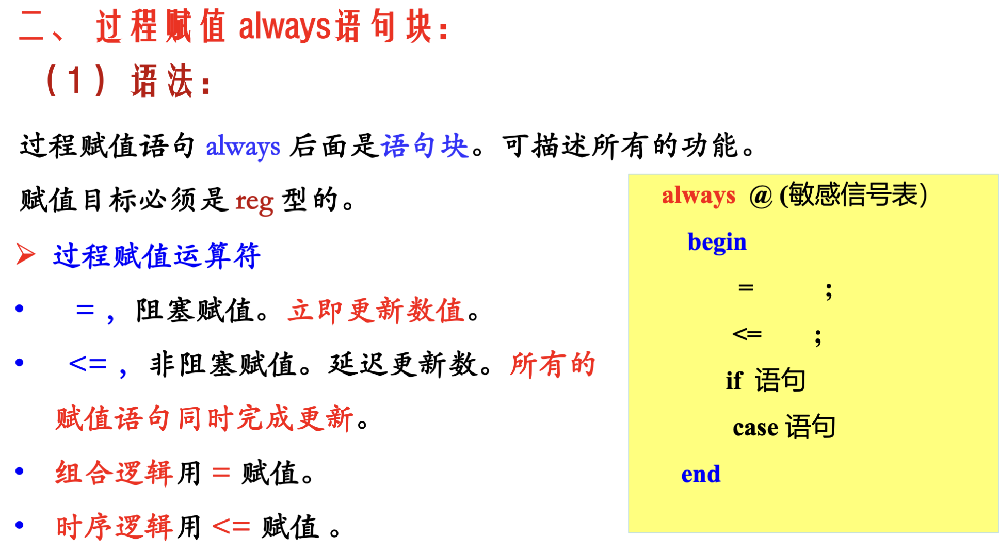
敏感信号表
- 敏感信号的变化才能启动进程；
- 组合逻辑中，所有输入都作为敏感信号,否则仿真结果和综合结果会不一致；
注意点
- 不要在一个aways 中同时使用= ，<=赋值；
- if、case、for 语句必需在 always 块中；
设计组合电路
要求
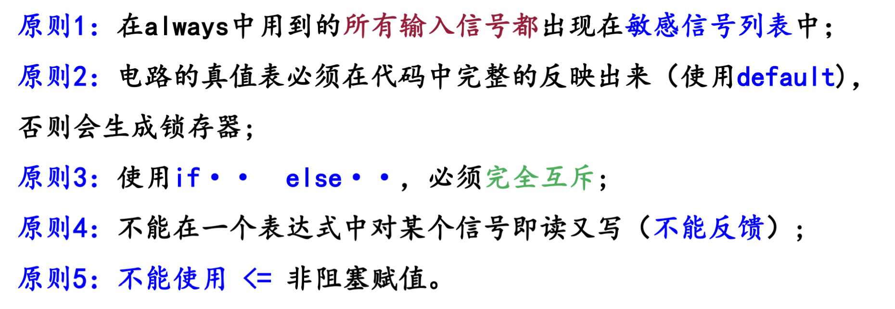
设计时序电路
要求
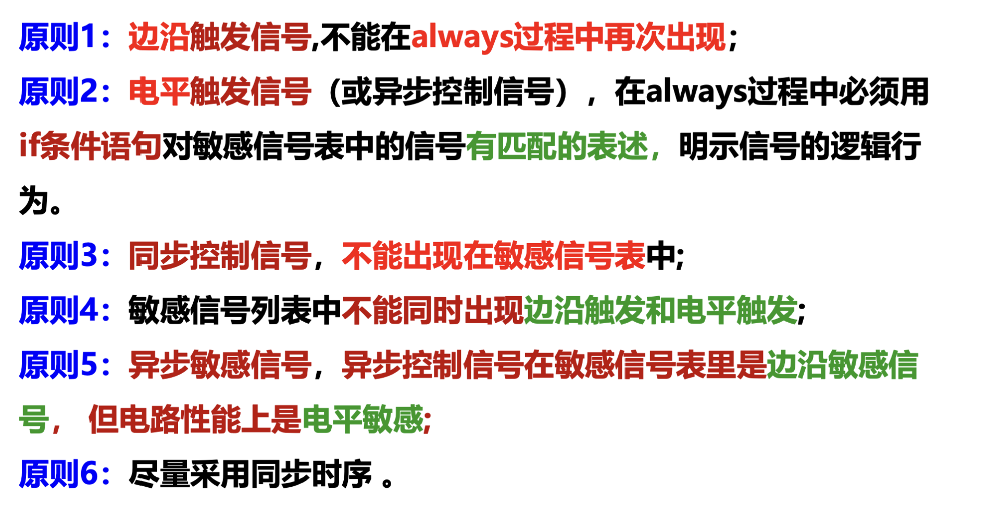
注意点
- 异步信号必须放在敏感信号表中；必须都是边沿；
- 锁存器的所有输入都放在敏感信号表中；锁存器敏感信号都是电平。
元件例化
- 一个元件是一段结构完整的 module 模块；
- 不能在always语句内部引用子模块；
存储系统
寄存器堆
- 由多个寄存器构成的集合。常用于数据寄存。 有三组外部信号：地址（短地址）、数据、读/写控制；
- 多端口寄存器；
- 可同时读、写， 可同时输出两个数；
寄存器队列
- FIFO（First In First Out，先进先出），用若干个移位寄存器构建的 小型存储部件。用于指令队列；
- 无地址线，双端口存储器，可同时读写；
- FIFO用于两个不同系统通信、数据采集传送、串并转换；
寄存器栈
- LIFO（ Last In First Out，后进先出）方式，用若干个双向移位 寄存器构建的小型存储部件；
- 用于减少函数调用时对内存的访问；
RAM
- 特性：能读能写、易失；
- 作用：存放编写的程序和数据
- 逻辑结构：

- 逻辑结构包括：地址译码器、存储矩阵和读写控制电路；
- 分为SRAM(Static RAM)和DRAM(Dynamic RAM)；
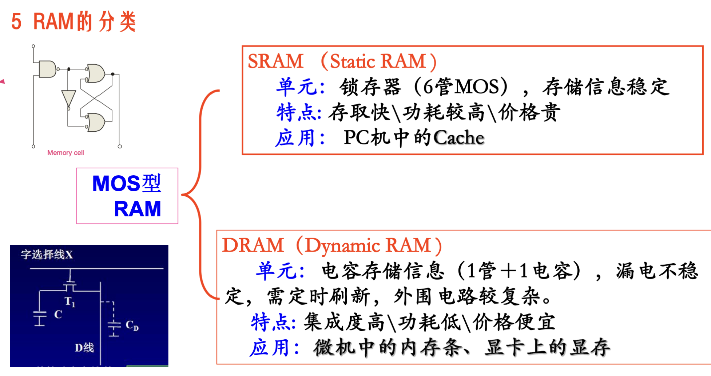
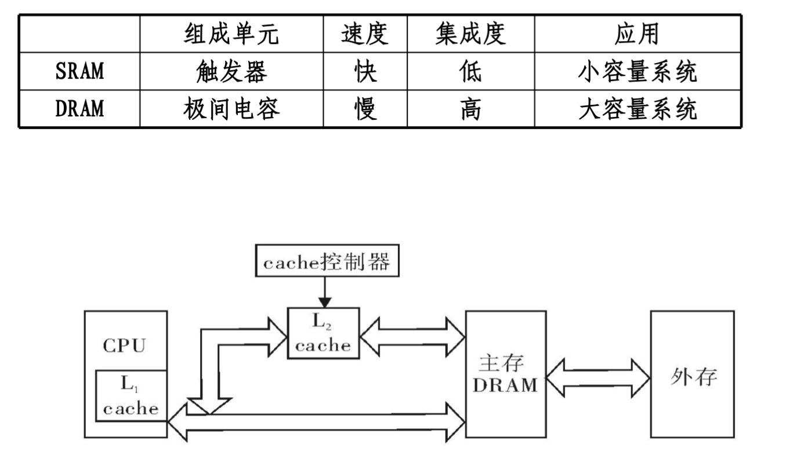
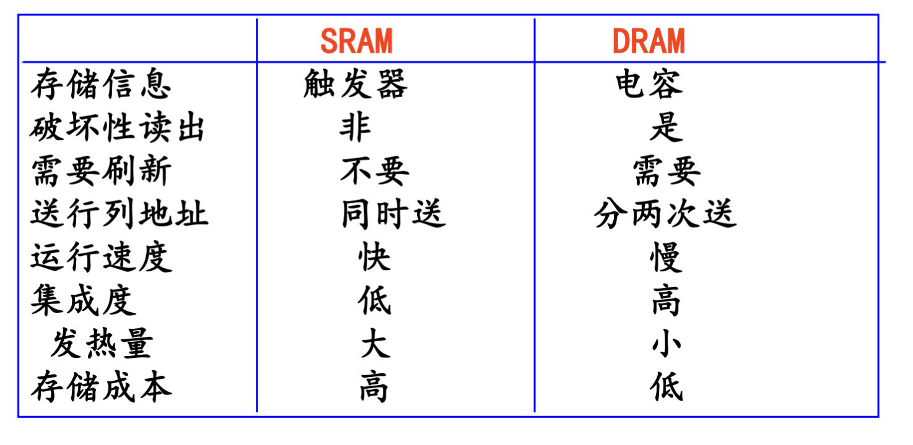
ROM
- ROM的逻辑构成＝ 与门阵列（地址译码器）＋或门阵列（存储矩阵）；
- 分为PROM、EPROM等；
存储器容量计算
- 单元数\(\times\)每单元的位数；即字数\(\times\)字长；
可编程逻辑器件PLD
概述
- 现代数字系统由三种积木块构成：CPU＋PLD＋RAM；
编程部位
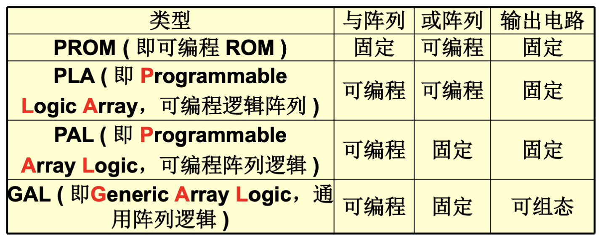
编程方法
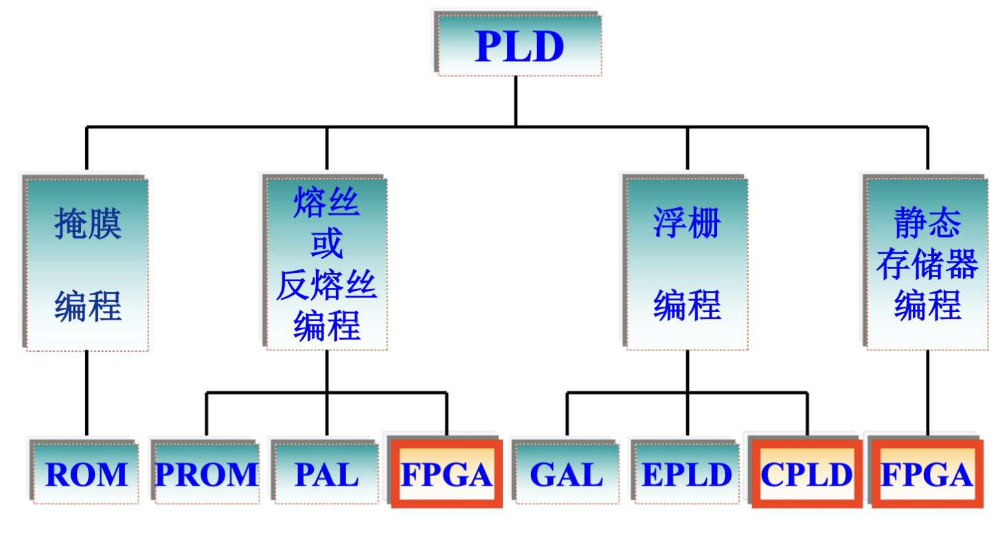
CPLD
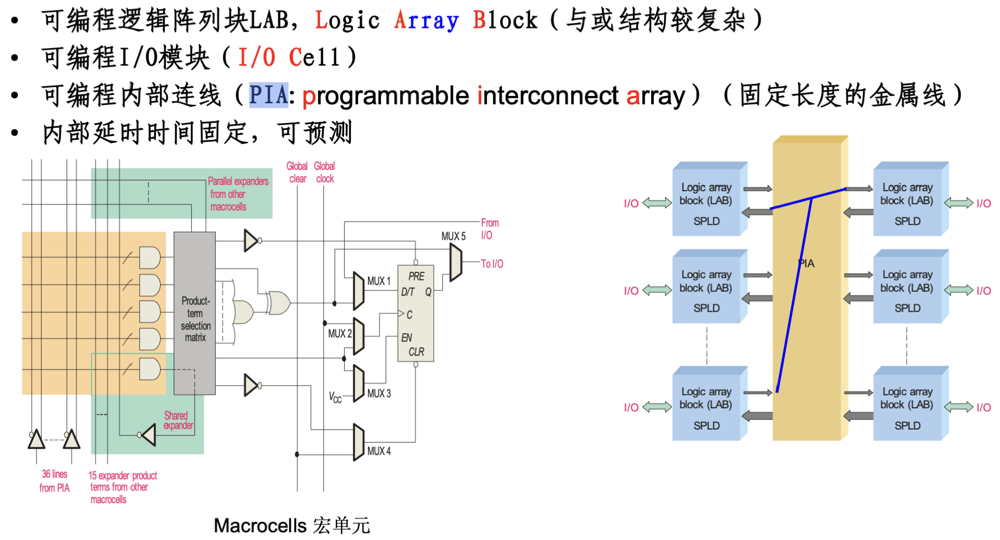
FPGA
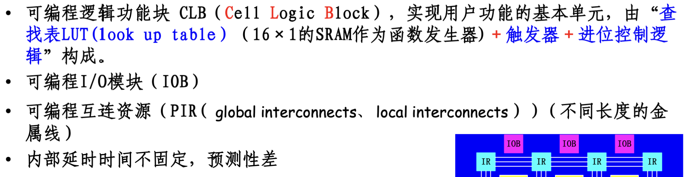
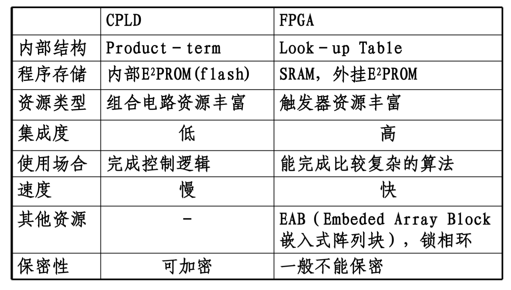
在系统可编程ISP
- 传统的PLD在用于生产时，是先编程后装配；
- isp则可以在装配之前、装配过程中和装配之后再编程；
数字系统
概述
- 具有存储、传输、处理信息能力的逻辑系统集合；
- 由“数据通路+控制逻辑”构成，其工作具有周期性；
- 数字系统与逻辑功能部件的区别：有无控制器；
- 在各部件之间传送信息的公共通路，称为数据通路。由总线连接的运算单元（组合电路）和存储单元构成；
总线
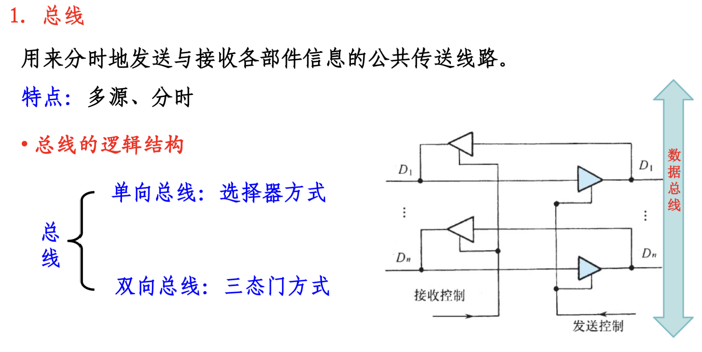
设计方法
- 自顶向下方法（from top to down ）：是将规模较大的系统从逻辑上划分为控制电路＋受控电路；
- 步骤：
- 划分子系统、子模块；
- 数据通路；
- 用数学语言(工具)，描述控制器的控制过程；
- 设计控制器；
- 设计数据处理器；
END
希望别出太偏捏
本博客所有文章除特别声明外，均采用 CC BY-NC-SA 4.0 许可协议。转载请注明来源 YokumiのBlog！